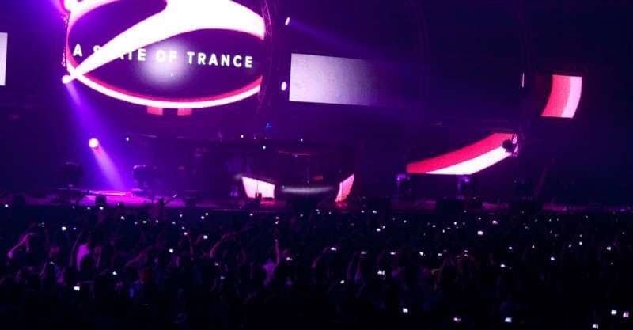
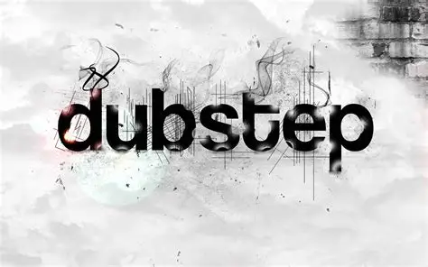

House
El House es un género de música electrónica que se caracteriza por su ritmo constante y repetitivo, con un tempo generalmente entre 120 y 130 BPM. Surgió en Chicago en la década de 1980 y ha evolucionado a lo largo de los años, dando lugar a numerosos subgéneros como Deep House, Tech House y Progressive House.
El House se distingue por su uso de sintetizadores, cajas de ritmos y samples, creando un sonido envolvente y bailable.

Techno
El Techno es un género de música electrónica que se caracteriza por su enfoque en la producción y la experimentación sonora, con un tempo generalmente entre 120 y 150 BPM. Surgió en Detroit en la década de 1980 y ha evolucionado a lo largo de los años, dando lugar a subgéneros como Minimal Techno, Acid Techno e Industrial Techno.
Se distingue por su sonido sintético y bailable que domina en clubes y festivales de todo el mundo.
Trance
El Trance se caracteriza por su estructura melódica, con builds y drops que crean tensión y liberación. Surgió en Alemania en la década de 1990 y ha evolucionado en subgéneros como Progressive Trance, Psytrance y Dark Trance.
Crea un sonido envolvente con un fuerte impacto emocional en festivales a nivel global.

Dubstep
El Dubstep se caracteriza por su uso del "wobble" bass y ritmos sincopados, con un tempo generalmente entre 140 y 150 BPM. Surgió en Londres en la década de 2000 y ha evolucionado en subgéneros como Future Bass, Brostep y Chillstep.
Ofrece una experiencia de bajos potentes e intensos.

Microgéneros
En la era digital, han surgido numerosos microgéneros que reflejan las innovaciones tecnológicas y las nuevas formas de expresión musical. Suelen ser más experimentales e innovadores, incorporando elementos del pop, rock, jazz e incluso música clásica.
Reflejan las tendencias culturales contemporáneas y el uso intensivo de producción digital moderna.